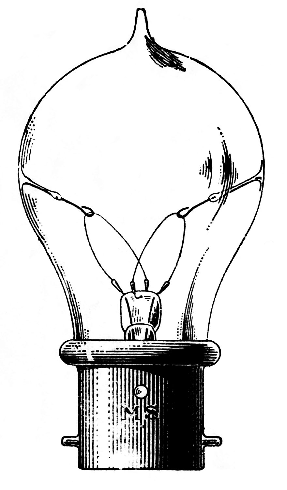

Hi! I'm Laura,
a crafty scientist who loves to code.
My Journey in a Timeline
My List of Done

Talks
You can check some of my talks here.
The Neon Biorepository
· Feb 2020, Terrestrial Parasite Tracker Workshop, Chicago